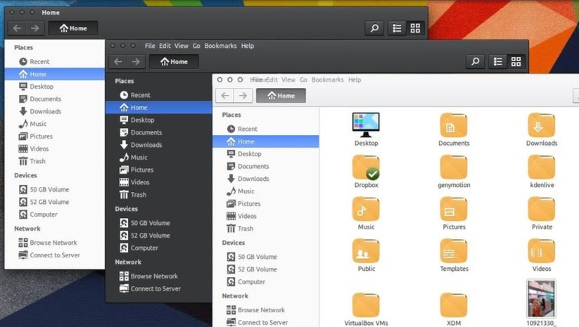

16.10 planning ... themes
As you are aware we ship two themes by default - Arc and Vertex.
We are looking at whether we should push the vertex theme into Debian and thus 16.10 repo's. So the question is - do you use Vertex? Should we drop this as a default install on 16.10?
If you use any other themes please let us know in the comments.
Keep Vertex - I love it
7 votes
✓
I'm an Arc user through and through
35 votes
Don't mind I install my own theme
10 votes
Keep Vertex - I love it:
I'm an Arc user through and through:
Don't mind I install my own theme: